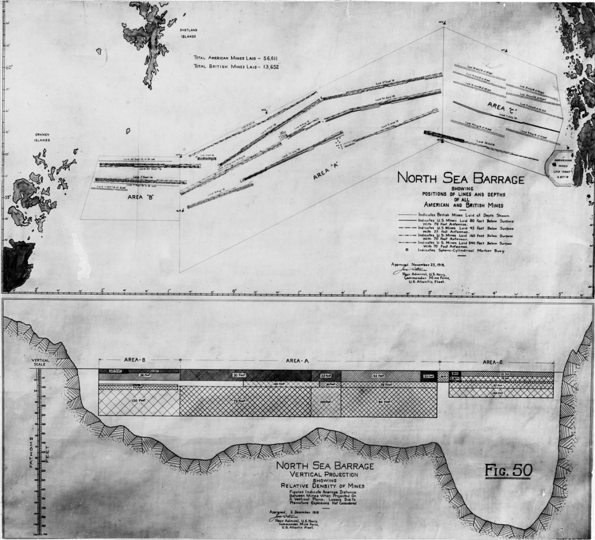
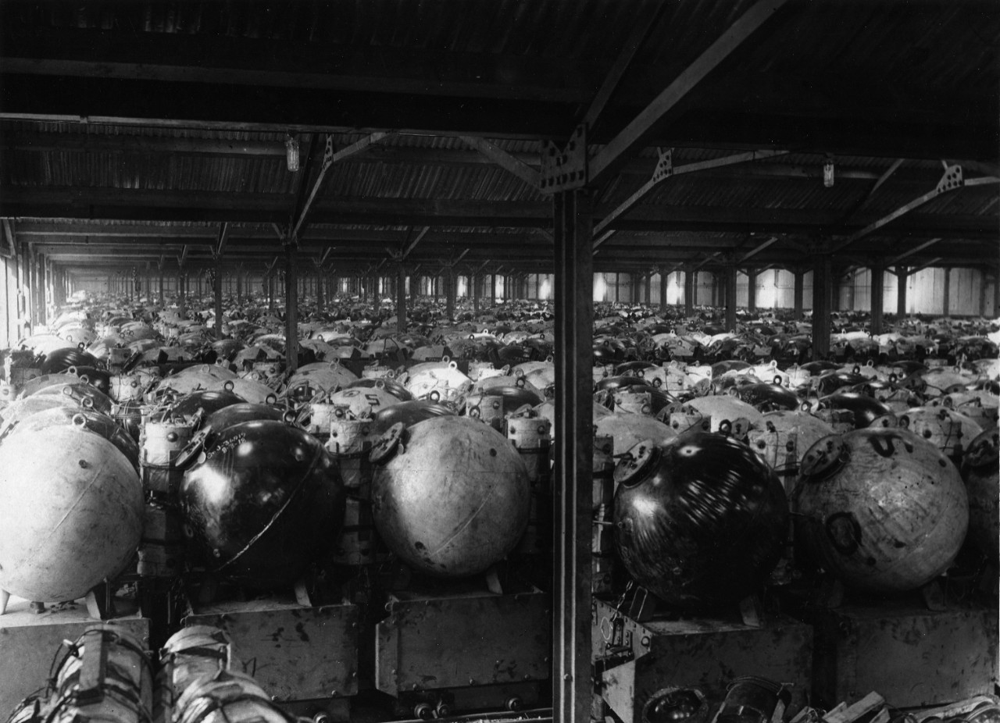
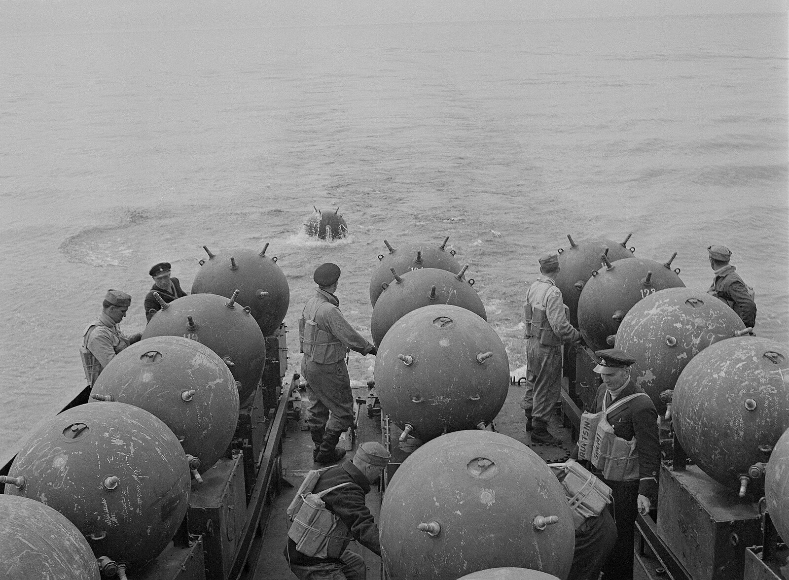
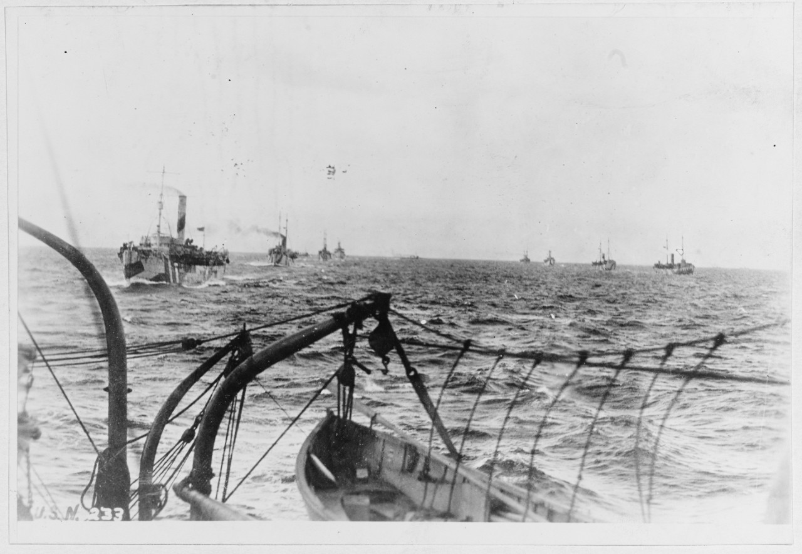
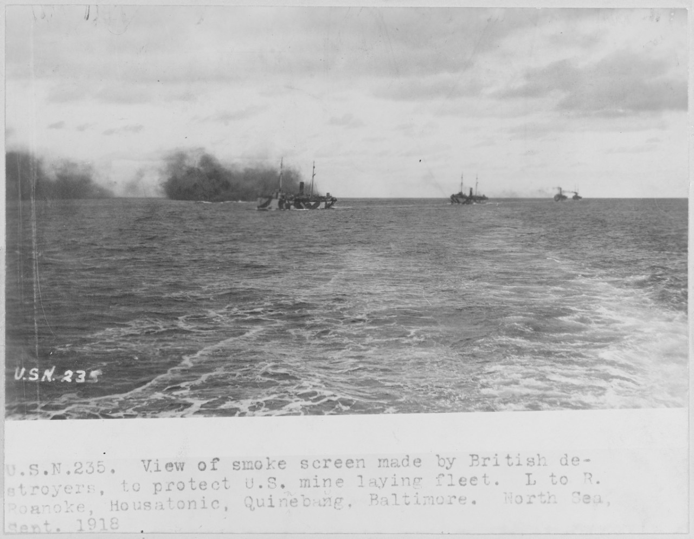
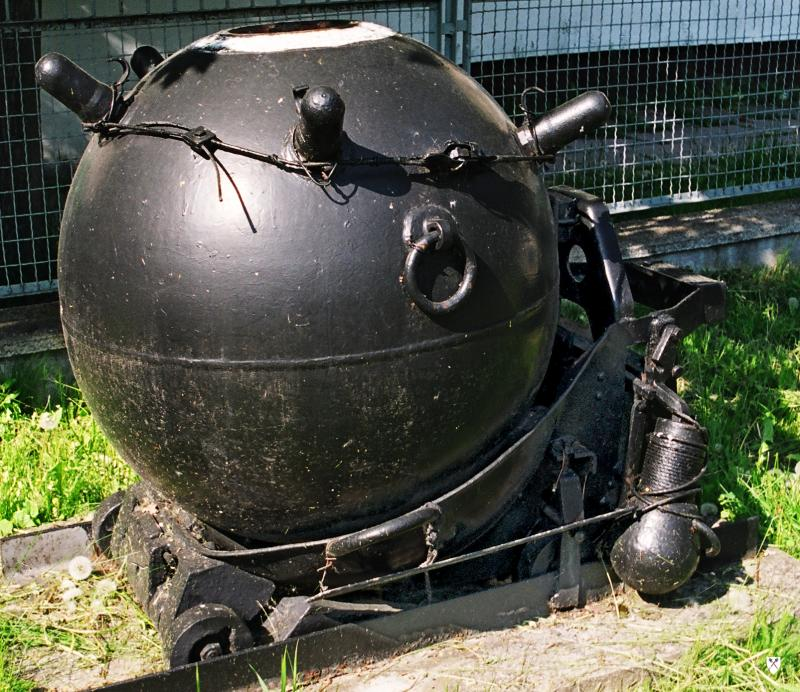
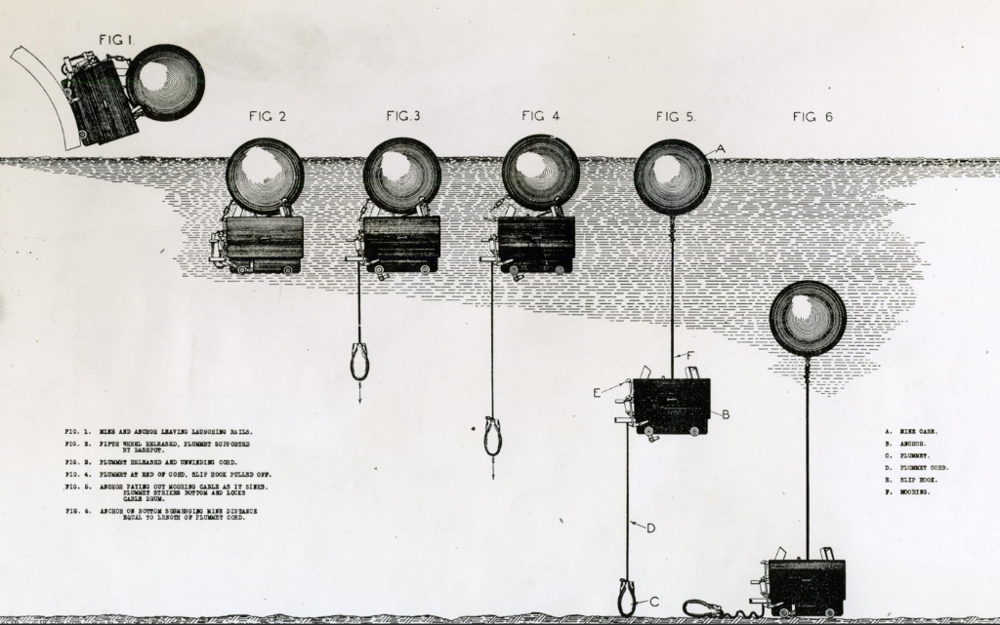

기뢰와 해협 (4) - 기뢰의 수심은 어떻게 맞출까?
게시: 2026-04-02T06:30:16+09:00
기뢰는 방어는 물론 공격에도 매우 효과적으로 사용될 수 있는 비용 효율적인 무기. 가령 WW1 기간 중 미해군의 최대 작전은 'The North Sea Barrage'. 이건 스코틀랜드와 노르웨이 사이의 길이 약 370km, 폭 약 40km에 달하는 해역을 기뢰로 완전히 막아버리겠다는 대담한 계획. 이 작전안을 접한 영국 해군은 미해군에게 '미쳤냐'라며 거부했으나, 미해군이 지속적으로 '이거 말고는 독일 U-boat에게 대응할 방법이 없다'라고 설득하자 결국 승락. 물론 대부분의 물자와 인력은 미해군이 담당한다는 조건. 실제로 1918년 6월부터 11월 종전 시까지 총 70,177기의 기뢰가 부설되었으며, 그중 미 해군이 56,571기를 담당. 다만 사실상 거의 종전에 임박하여 이 작전이 시작되었기에, 스코틀랜드-노르웨이의 이 거대한 기뢰밭을 완성하기도 전에 전쟁이 끝나버렸고, 여기에 걸려 격침된 것이 확인된 독일 U-boat는 고작 6척에 불과.

(노르웨이와 스코틀랜드 사이의 북해 바다를 그냥 기뢰로 막아버리겠다는, 정말 미국이 아니면 엄두를 내지 못할 대작전 The North Sea Barrage (북해 기뢰 장벽)의 계획도. 이는 수상함보다는 잠수함을 잡는 것이 목적이었으므로 기뢰의 부유 수심을 몇 m에 맞춰야 할지도 고민이었고, 결국 미해군은 14m, 49m, 62m의 3개 층으로 나누어 기뢰를 부설.)

(이 북해 기뢰 봉쇄 작전에 사용되기 위한 기뢰 보관소. 미국도 막 참전했을 때는 그 정도로 막대한 개수의 기뢰는 없었으므로 이 작전이 입안되면서 미친 듯이 기뢰를 생산. 특히 이건 잠수함용 기뢰였으므로 잠수함과 기뢰가 직접 접촉하지 않아도 그 위를 지나가기만 해도 폭발하도록 설계부터 약간 특수. 즉 물 속에 떠있는 기뢰 위에 긴 안테나 선을 달아서 부이로 띄워 놓는 것. 그 기뢰 위로 지나가던 잠수함의 함체가 그 안테나 선에 닿기만 하면 전기가 흘러 기뢰가 폭발하는 구조. 자세히 보면 모든 기뢰들이 커다란 상자 위에 놓여 있는데, 뒤에서 다시 설명하겠지만 저 상자는 계뢰 기뢰의 일부인 '닻'.) WW2 기간 중에도 영국 해군의 최대 공격 작전은 유럽 북서부에 5만 개 이상의 기뢰를 부설한 것. WW1과는 달리 일찌감치 시작했기에, 이 작전을 통해 영국 해군은 기뢰로만 추축국 선박 1,043척을 격침. 같은 기간 영국 잠수함이 격침시킨 선박은 432척에 불과. 물론 이는 제해권을 미국과 영국이 쥐고 있었기 때문이고 추축국의 경우엔 그 비율이 정반대임. 추축국은 유럽 전선에서 기뢰로 802척, 잠수함으로 2,788척의 연합군 선박을 격침. 태평양에서도 연합군은 기뢰로 287척, 잠수함으로 1,369척의 일본 선박을 격침. WW2 때 가장 많은 탱크를 격파한 무기는 지뢰라는 이야기도 있지만 그건 정확한 이야기는 아님. 지뢰는 방어용으로 쓰이는 경우가 대부분이고 기뢰와는 달리 공격용 무기로는 사용할 수 없음. 지뢰와 기뢰는 어떤 점이 다르길래 기뢰는 공격용으로도 사용 가능한 것일까? 바로 부설할 때의 신속함 덕분. 지뢰는 기본적으로 땅을 파고 묻어야 하기 때문에 적진 바로 코 앞에 신속하게 다량으로 매설할 수 없어서 공격 작전에는 사용이 어려움. 그러나 바다에 기뢰를 부설하는 것은 그냥 던져 넣기만 하면 되므로 적 항구 코 앞에서도 (야음을 틈타든 안개 속에서건) 들키지만 않으면 짧은 시간 안에 많은 기뢰 부설이 가능. 가령 WW1 당시 북해 기뢰 장벽 부설 작전에서는 미해군 선박들은 평균적으로 4초에서 12초마다 1기씩 기뢰를 투하했음.

(기뢰와 지뢰가 결정적으로 다른 점은, 기뢰는 짧은 시간 안에 다량의 기뢰를 부설하는 것이 가능하다는 것. 바로 그 특성 때문에 방어 뿐만 아니라 적 항구 등에 대한 공격에도 유효하게 사용됨. 보통 계류 기뢰는 둥근 기뢰 밑에 사각형 닻이 달린 경우가 많으나, 설계에 따라 사각형 닻 대신 원통형 닻이 달리기도 함. 이 사진은 WW2 중인 1942년 계류 기뢰를 부설 중인 핀란드 해군의 모습. 기뢰 밑에 상자형 닻이 달린 것이 보임.)

(이건 WW1 당시 북해 기뢰 봉쇄 작전에서 기뢰를 부설하는 중인 미국 선박들. 이들은 총 15회에 걸쳐 기뢰를 부설했는데, 처음에는 조심스럽고 느렸지만 가면 갈 수록 능숙해져서 나중에 제10회 부설 작업시에는 10척의 선박이 단 3시간 50분 만에 5,520기의 기뢰를 부설. 이렇게 빨리 부설할 수 있었는데 왜 5개월 동안이나 진행하고도 완료를 못했을까? 그건 기뢰를 부설하는데 시간이 오래 걸렸기 때문이 아니라, 그 정도로 많은 기뢰를 생산하는데 시간이 많이 걸렸기 때문.)

(북해 기뢰 봉쇄 작전은 안전한 아군측 바다에서 여유있게 작업하는 것이 결코 아니었고, 언제든 독일군 U-boat 또는 수상함이 나타날 수 있는 상황애서 전개되었음. 그래서 혹시라도 잠망경으로 지켜보고 있을 U-boat가 있을 것에 대비하여 영국군 구축함이 위 사진과 같이 연막을 치고 기뢰 부설 작업을 수행.) 그런데 기뢰는 전쟁이 끝나면 나중에 제거해야 하는 물건. 실제로 위에서 언급한 WW1 당시 북해 기뢰 장벽은 다 부설되기도 전에 전쟁이 끝나버렸고, 전쟁이 끝나자마자 기뢰 제거 계획을 짜기 시작해서 바로 3달 뒤부터 약 6~7개월 간 많은 선박들을 동원하여 소해 작업을 실시. 봄부터 가을까지 진행된 이 소해 작업에서 미해군은 자신들이 부설했던 기뢰 56,571기를 모두 제거했다고 보고했지만, 나중에 밝혀진 바에 따르면 실제로는 그의 40% 정도만 제거했고, 60% 정도는 뭔가 고장을 일으켜 저절로 폭발했거나 가라앉거나 해서 분실된 것이었음. 실제로 종전 후 몇 년에 걸쳐 그때 부설되었던 기뢰가 해안으로 떠밀려 오는 등 꾸준한 위험 요소가 되어 유럽 국가들의 골치를 아프게 했음. 보통 기뢰 부설하는 노력이 1이라고 하면 그 기뢰가 어디에 부설되었는지 정확히 기록된 지도를 가지고 있다고 하더라도 그 소해 작업에는 최소 20배, 어떤 경우는 100배에 달하는 시간과 노력이 들어감. 그렇게 향후 제거 작업을 위해서라도 기뢰는 대개 해저면에 착지한 닻에 와이어로 묶어 위치를 고정시킨 계류 기뢰(moored mine)을 사용. 바다의 해저면은 깊은 곳도 있고 얕은 곳도 있는 것이 당연. 그런데, 계류 기뢰들을 부설할 때 그렇게 재빨리 아무렇게나 던져 넣어도 되나? 미리 그 위치의 바다 깊이를 세밀히 조사한 뒤 그 깊이에 따라 바닥의 닻에 연결하는 강철 와이어의 길이를 10m든 20m든 미리 설정해놓아야 하는 것 아닌가? 아님. 기뢰를 설치하는 측에서는 그냥 수면 아래 몇 m의 깊이로 떠 있도록 할지만 미리 설정하면 됨. 어떻게 그게 가능할까? 인간이 인간을 죽이기 위해 머리를 짜내는 것을 보면 너무 절묘해서 소름이 끼치는 경우가 많은데, 이것도 그런 사례 중 하나.

(이건 폴란드의 wz 08/39 접촉식 기뢰. 1908년 러시아에서 개발한 것을 WW1 이후 폴란드가 도입하여 생산한 것. 위의 둥근 기뢰 본체는 다들 알아볼 텐데, 그 아래의 받침 수레 같은 것은 단순히 기뢰를 굴려서 운반하기 위한 받침대가 아니라 바로 닻의 역할을 하는 무게추. 보통은 저 닻은 커다란 사각형 상자 모양으로 생겼는데 이 폴란드 기뢰의 닻은 바퀴 달린 수레 모양으로 생겼음.)
위의 사진이 WW1 이전부터 사용되던 전형적인 계류 기뢰의 형태. 그런데 자세히 보면 저 수레 모양의 받침대, 즉 닻 옆에 뭔가 노래방 마이크 모양으로 생긴 것이 달려 있고, 거기에 긴 마이크 전선 같은 와이어가 뭉쳐져 있는 것이 보임. 그것이 바로 계류 기뢰의 심도를 조절하는 핵심 장치인 추(plummet). 닻과 저 추를 연결하는 와이어의 길이를 원하는 기뢰 수심에 맞추기만 하면 됨. 그 과정을 자세히 설명하는 그림이 바로 아래의 것.

1. 투하 및 초기 부유 (Fig 1 ~ Fig 2) 기뢰 함정에서 기뢰(A)와 닻(B)이 결합된 상태로 투하됨. 초기에는 기뢰 케이스의 부력 때문에 전체 장치가 해수면 근처에 잠시 뜸. 2. 추(plummet) 하강 (Fig 3 ~ Fig 4) 닻 하단에 매달려 있던 추(C)가 풀려나며 아래로 하강. 이때 추와 닻을 연결하는 와이어(D)의 길이는 수면으로부터 기뢰를 위치시키고 싶은 목표 심도와 동일하게 설정. 3. 수심 고정 트리거 (Fig 5) 닻(B)에 물이 들어가면서 서서히 가라앉기 시작. 이때 닻과 기뢰를 연결하는 계류 케이블(Mooring Cable, F)이 닻 내부의 드럼에서 풀려나감. 핵심 동작: 닻이 계속 가라앉다가, 먼저 내려가던 추(C)가 해저면에 닿는 순간 추 와이어(D)의 장력이 느슨해짐. 이 장력의 변화를 감지한 닻 내부의 장치(slip hook 및 자물쇠)가 작동하여, 풀려나가던 계류 케이블 드럼을 즉시 고정. 4. 최종 전개 (Fig 6) 드럼이 고정되면 닻(B)은 남은 거리(추 줄의 길이만큼)를 더 가라앉아 해저면에 안착. 이때 닻이 해저로 내려가는 만큼, 연결된 기뢰(A)는 해수면 아래로 끌려 내려감. 결과적으로 기뢰는 해저면에 닿았던 추 와이어(D)의 길이만큼의 수심에 정확히 멈춤. 이런 장치 덕분에 기뢰 부설함은 수심이 얼마인지 걱정하지 않고 그냥 원하는 위치에 기뢰를 던져 넣기만 하면 되는 것. 1915년 3월, 다다넬즈 해협에 영불 연합 함대가 선회할 해역에 기습적으로 기뢰를 부설한 오스만 투르크 해군의 누스렛 호도 저런 장치 덕분에 기뢰 부설을 순식간에 마칠 수 있었음. 해협 내의 원하는 정확한 위치에 기뢰를 투하하기 위해서는 밤 보다는 해안까지의 거리를 명확히 눈으로 볼 수 있는 낮이 좋았는데, 그러면 당연히 적군도 그 기뢰 부설 사실을 알게 됨. 그런데 그 날 아침엔 운이 좋게도 안개가 꽤 자욱하게 끼었음. 그래서 누스렛 호는 새벽 5시에 출항하여 아침 7시 즈음에 해당 해역에 도착했고, 15초 마다 1발씩 총 26기의 기뢰를 불과 6~7분 만에 성공적으로 부설한 뒤 사라짐.

(누스렛 호가 아침 안개 속에 기습적으로 부설한 기뢰 26기의 라인이 위 지도의 11번)
다음 주에는 그 기뢰가 어느 정도의 대어를 낚았는지 보시게 됨.